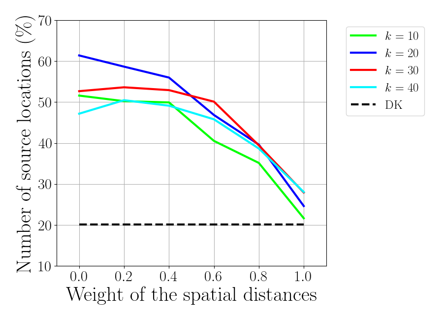
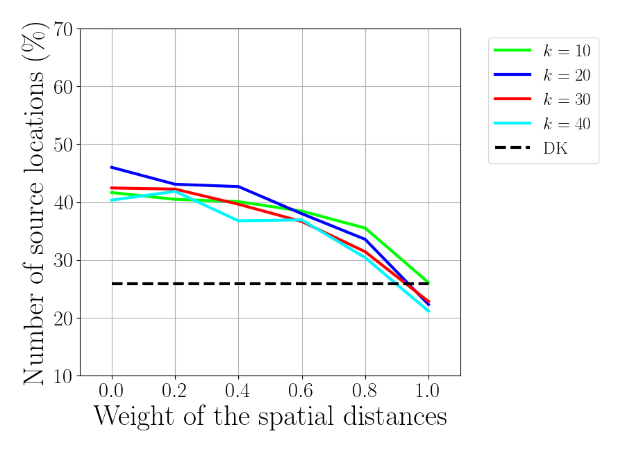

Note
Go to the end to download the full example code
Functional poperties of the MEG-informed parcellations¶
Import the required packages
import os.path as op
import numpy as np
import pickle
from mne import (read_forward_solution, pick_types_forward,
convert_forward_solution, read_source_spaces,
read_labels_from_annot)
from mne.datasets import sample
import megicparc
from megicparc.utils import compute_inv_op_rank, collapse_RM
import matplotlib.pyplot as plt
Define input parameters for the flame algorithm running in megicperc
gamma_tot = np.arange(0, 1.01, 0.2)
knn_tot = [10, 20, 30, 40]
theta = 0.05
parc = 'aparc'
sensors_meg = 'grad'
folder_fl = op.join('..', 'data', 'data_mne_sample')
string_target_file = op.join(folder_fl,
'{:s}_flame_grad_k{:d}_gamma{:1.2f}_theta{:1.2f}.pkl')
Load lead-field matrix, source-space and anatomy-based Atlas
data_path = sample.data_path()
subjects_dir = op.join(data_path, 'subjects')
subject = 'sample'
fwd_file = op.join(data_path, 'MEG', subject, 'sample_audvis-meg-eeg-oct-6-fwd.fif')
src_file = op.join(folder_fl, 'source_space_distance-src.fif')
fwd = read_forward_solution(fwd_file)
fwd = pick_types_forward(fwd, meg=sensors_meg, eeg=False,
ref_meg=False, exclude='bads')
fwd = convert_forward_solution(fwd, surf_ori=True, force_fixed=True,
use_cps=True)
src = read_source_spaces(src_file)
fwd['src'] = src
label_lh = read_labels_from_annot(subject=subject, parc=parc, hemi='lh',
subjects_dir=subjects_dir)
label_rh = read_labels_from_annot(subject=subject, parc=parc, hemi='rh',
subjects_dir=subjects_dir)
label = label_lh + label_rh
Reading forward solution from /u/29/sommars1/unix/mne_data/MNE-sample-data/MEG/sample/sample_audvis-meg-eeg-oct-6-fwd.fif...
Reading a source space...
Computing patch statistics...
Patch information added...
Distance information added...
[done]
Reading a source space...
Computing patch statistics...
Patch information added...
Distance information added...
[done]
2 source spaces read
Desired named matrix (kind = 3523) not available
Read MEG forward solution (7498 sources, 306 channels, free orientations)
Desired named matrix (kind = 3523) not available
Read EEG forward solution (7498 sources, 60 channels, free orientations)
Forward solutions combined: MEG, EEG
Source spaces transformed to the forward solution coordinate frame
203 out of 366 channels remain after picking
Average patch normals will be employed in the rotation to the local surface coordinates....
Converting to surface-based source orientations...
[done]
Reading a source space...
Computing patch statistics...
Patch information added...
Distance information added...
[done]
Reading a source space...
Computing patch statistics...
Patch information added...
Distance information added...
[done]
2 source spaces read
Reading labels from parcellation...
read 34 labels from /u/29/sommars1/unix/mne_data/MNE-sample-data/subjects/sample/label/lh.aparc.annot
Reading labels from parcellation...
read 34 labels from /u/29/sommars1/unix/mne_data/MNE-sample-data/subjects/sample/label/rh.aparc.annot
Parameters for inverse modeling
snr = 3
lam = 1. / snr
method = 'dSPM' # dSPM or MNE or sLORETA
depth = None
mode_labels = 'mean_flip'
n_vert = fwd['src'][0]['nuse'] + fwd['src'][1]['nuse']
L = fwd['sol']['data']
sigma = np.mean(np.mean(L**2, axis=0)) / snr
C = sigma * np.eye(L.shape[0])
Initialization
eucl_errors_full = []
eucl_errors = {x : [] for x in \
['k%d_gamma%1.2f'%(knn, gamma) for knn in knn_tot for gamma in gamma_tot]}
correct_roi = np.zeros((np.size(knn_tot), np.size(gamma_tot)))
correct_roi_full = np.zeros((np.size(knn_tot), np.size(gamma_tot)))
dist_index = np.zeros((np.size(knn_tot), np.size(gamma_tot)))
Analysis with anatomy-based parcels.
proj_anrois = megicparc.labels_to_array(label, fwd['src'])
if proj_anrois['outliers'] > 0:
aux_num_roi = len(proj_anrois['parcel']) - 1
else:
aux_num_roi = len(proj_anrois['parcel'])
# Source estimation and localization error on full source space
W_full = compute_inv_op_rank(L, C, lam,
depth=depth, method=method, rank=None)
R_full = np.dot(W_full, L)
peak_full = np.argmax(R_full**2, axis=0)
ee_full = megicparc.compute_localization_error(peak_full,
np.arange(n_vert), fwd['src'])
eucl_errors_full += ee_full.tolist()
# Resolution matrix related evaluation criteria
R_an = collapse_RM(R_full, label, fwd['src'], mode_labels)
peak_c_an = np.argmax(abs(R_an), axis=0)
true_c_an = megicparc.membership2vector(
proj_anrois['parcel'][:aux_num_roi], n_vert)
correct_roi_an = np.count_nonzero(true_c_an == peak_c_an)/n_vert*100
correct_roi_an_full = np.count_nonzero(true_c_an[peak_full] == peak_c_an) \
/n_vert*100
_, dist_index_an = megicparc.compute_distinguishability_index(
R_an, proj_anrois['parcel'], aux_num_roi)
Given rank = 203 - num eigenvalues = 203
Analysis with meg-informed parcels
for idx_g, gamma in enumerate(gamma_tot):
for idx_k, knn in enumerate(knn_tot):
target_file = string_target_file.format(
subject, knn, gamma, theta)
print('Loading %s'%target_file)
with open(target_file, 'rb') as aux_lf:
flame_data = pickle.load(aux_lf)
# 1. Compute RMs
L_fl = L[:, flame_data['centroids_id']]
W_fl = compute_inv_op_rank(L_fl, C, lam,
depth=depth, method=method)
R_fl = np.dot(W_fl, L)
peak_c = np.argmax(abs(R_fl), axis=0)
# 2. Compute localization errors
ee = megicparc.compute_localization_error(peak_c,
flame_data['centroids_id'], fwd['src'])
eucl_errors['k%d_gamma%1.2f'%(knn, gamma)] += ee.tolist()
# 3. Correctly identified regions
true_c = megicparc.membership2vector(
flame_data['parcel'][:flame_data['centroids']], n_vert)
correct_roi[idx_k, idx_g] = \
np.count_nonzero(true_c == peak_c)/n_vert*100
correct_roi_full[idx_k, idx_g] = \
np.count_nonzero(true_c[peak_full] == peak_c)/n_vert*100
# 4. compute DI
_, DI = megicparc.compute_distinguishability_index(
R_fl, flame_data['parcel'], flame_data['centroids'])
dist_index[idx_k, idx_g] = DI
del flame_data
Loading ../data/data_mne_sample/sample_flame_grad_k10_gamma0.00_theta0.05.pkl
Given rank = 203 - num eigenvalues = 203
Loading ../data/data_mne_sample/sample_flame_grad_k20_gamma0.00_theta0.05.pkl
Given rank = 203 - num eigenvalues = 203
Loading ../data/data_mne_sample/sample_flame_grad_k30_gamma0.00_theta0.05.pkl
Given rank = 203 - num eigenvalues = 203
Loading ../data/data_mne_sample/sample_flame_grad_k40_gamma0.00_theta0.05.pkl
Given rank = 203 - num eigenvalues = 203
Loading ../data/data_mne_sample/sample_flame_grad_k10_gamma0.20_theta0.05.pkl
Given rank = 203 - num eigenvalues = 203
Loading ../data/data_mne_sample/sample_flame_grad_k20_gamma0.20_theta0.05.pkl
Given rank = 203 - num eigenvalues = 203
Loading ../data/data_mne_sample/sample_flame_grad_k30_gamma0.20_theta0.05.pkl
Given rank = 203 - num eigenvalues = 203
Loading ../data/data_mne_sample/sample_flame_grad_k40_gamma0.20_theta0.05.pkl
Given rank = 203 - num eigenvalues = 203
Loading ../data/data_mne_sample/sample_flame_grad_k10_gamma0.40_theta0.05.pkl
Given rank = 203 - num eigenvalues = 203
Loading ../data/data_mne_sample/sample_flame_grad_k20_gamma0.40_theta0.05.pkl
Given rank = 203 - num eigenvalues = 203
Loading ../data/data_mne_sample/sample_flame_grad_k30_gamma0.40_theta0.05.pkl
Given rank = 203 - num eigenvalues = 203
Loading ../data/data_mne_sample/sample_flame_grad_k40_gamma0.40_theta0.05.pkl
Given rank = 203 - num eigenvalues = 203
Loading ../data/data_mne_sample/sample_flame_grad_k10_gamma0.60_theta0.05.pkl
Given rank = 203 - num eigenvalues = 203
Loading ../data/data_mne_sample/sample_flame_grad_k20_gamma0.60_theta0.05.pkl
Given rank = 203 - num eigenvalues = 203
Loading ../data/data_mne_sample/sample_flame_grad_k30_gamma0.60_theta0.05.pkl
Given rank = 203 - num eigenvalues = 203
Loading ../data/data_mne_sample/sample_flame_grad_k40_gamma0.60_theta0.05.pkl
Given rank = 203 - num eigenvalues = 203
Loading ../data/data_mne_sample/sample_flame_grad_k10_gamma0.80_theta0.05.pkl
Given rank = 203 - num eigenvalues = 203
Loading ../data/data_mne_sample/sample_flame_grad_k20_gamma0.80_theta0.05.pkl
Given rank = 203 - num eigenvalues = 203
Loading ../data/data_mne_sample/sample_flame_grad_k30_gamma0.80_theta0.05.pkl
Given rank = 203 - num eigenvalues = 203
Loading ../data/data_mne_sample/sample_flame_grad_k40_gamma0.80_theta0.05.pkl
Given rank = 203 - num eigenvalues = 203
Loading ../data/data_mne_sample/sample_flame_grad_k10_gamma1.00_theta0.05.pkl
Given rank = 203 - num eigenvalues = 203
Loading ../data/data_mne_sample/sample_flame_grad_k20_gamma1.00_theta0.05.pkl
Given rank = 203 - num eigenvalues = 203
Loading ../data/data_mne_sample/sample_flame_grad_k30_gamma1.00_theta0.05.pkl
Given rank = 203 - num eigenvalues = 203
Loading ../data/data_mne_sample/sample_flame_grad_k40_gamma1.00_theta0.05.pkl
Given rank = 203 - num eigenvalues = 203
Compute mean and SEM of the euclidean localication error over the points of the source-space
# Anatomy-based parcels
aux_ee = np.asanyarray(eucl_errors_full)
eucl_err_full_ave = np.mean(aux_ee)
eucl_err_full_sem = np.std(aux_ee, ddof=1) / np.sqrt(np.size(aux_ee))
# MEG-informed parcels
eucl_err_ave = np.zeros((np.size(knn_tot), np.size(gamma_tot)))
eucl_err_sem = np.zeros((np.size(knn_tot), np.size(gamma_tot)))
for idx_g, gamma in enumerate(gamma_tot):
for idx_k, knn in enumerate(knn_tot):
aux_ee = np.asanyarray(eucl_errors['k%d_gamma%1.2f'%(knn, gamma)])
eucl_err_ave[idx_k, idx_g] = np.mean(aux_ee)
eucl_err_sem[idx_k, idx_g] = np.std(aux_ee, ddof=1) / np.sqrt(np.size(aux_ee))
Define general settings for plotting
plt.rc('text', usetex=True)
plt.rc('font', family='serif', size=22)
plt.rcParams['axes.grid'] = True
plt.rcParams['lines.linewidth'] = 3
plt.rcParams['errorbar.capsize'] = 3.5
plt.rcParams["figure.figsize"] = [12, 8]
plt.rcParams['patch.force_edgecolor'] = True
colors = np.array([np.array([0, 1, 0]),
np.array([0, 0, 1]),
np.array([1, 0, 0]),
np.array([0, 0.9655, 1])])
Plot Euclidean localization error
f_ee = plt.figure()
plt.errorbar(gamma_tot, eucl_err_full_ave*np.ones(np.size(gamma_tot)),
yerr=eucl_err_full_sem*np.ones(np.size(gamma_tot)),
fmt='k--', label='full source-space')
for idx_k, knn in enumerate(knn_tot):
plt.errorbar(gamma_tot,
eucl_err_ave[idx_k, :], yerr=eucl_err_sem[idx_k, :],
label='$k$ = %d'%knn, color=colors[idx_k])
plt.xlabel(r'Weight of the spatial distances', fontsize=30)
plt.ylabel(r'Localization error (mm)', fontsize=30)
plt.xlim(-0.1, 1.1)
plt.legend()
if method == 'dSPM':
plt.ylim(10, 25)
else:
plt.ylim(0, 27)
plt.xticks(gamma_tot)
plt.legend(bbox_to_anchor=(1.05, 1.0), loc='upper left',fontsize=18)
f_ee.set_size_inches(9, 5.5)
plt.tight_layout(pad=1)
Plot percentage of corrected identified regions
f_corr = plt.figure()
for idx_k, knn in enumerate(knn_tot):
plt.plot(gamma_tot, correct_roi[idx_k, :],
label='$k$ = %d'%knn, color=colors[idx_k])
plt.plot(gamma_tot, correct_roi_an*np.ones(np.size(gamma_tot)),
'k--', label='DK')
plt.xlabel(r'Weight of the spatial distances', fontsize=30)
plt.xticks(gamma_tot)
plt.ylabel(r'Number of source locations ($\%$)',fontsize=30)
plt.ylim(10, 70)
plt.xlim(-0.1, 1.1)
plt.legend(bbox_to_anchor=(1.05, 1.0), loc='upper left',fontsize=18)
f_corr.set_size_inches(9, 6.5)
plt.tight_layout(pad=1)
f_corr_full = plt.figure()
ax_corr_full = f_corr_full.add_subplot(1,1,1)
for idx_k, knn in enumerate(knn_tot):
ax_corr_full.plot(gamma_tot, correct_roi_full[idx_k, :],
label='$k$ = %d'%knn, color=colors[idx_k])
ax_corr_full.plot(gamma_tot, correct_roi_an_full*np.ones(np.size(gamma_tot)),
'k--', label='DK')
ax_corr_full.set_xlabel(r'Weight of the spatial distances', fontsize=30)
ax_corr_full.set_xticks(gamma_tot)
ax_corr_full.set_ylabel(r'Number of source locations ($\%$)',fontsize=30)
ax_corr_full.set_ylim(10, 70)
ax_corr_full.set_xlim(-0.1, 1.1)
plt.legend(bbox_to_anchor=(1.05, 1.0), loc='upper left',fontsize=18)
f_corr_full.set_size_inches(9, 6.5)
plt.tight_layout(pad=1)
- 
- 
Plot distinhuishability index
_aux = np.array([-0.01, 0.005, -0.005, 0.01])
f_DI = plt.figure()
for idx_k, knn in enumerate(knn_tot):
plt.plot(gamma_tot+_aux[idx_k], dist_index[idx_k, :],
label='$k$ = %d'%knn, color=colors[idx_k],
zorder=idx_k)
plt.plot(gamma_tot, dist_index_an*np.ones(np.size(gamma_tot)),
'k--', label='DK')
plt.legend(bbox_to_anchor=(1.05, 1.0), loc='upper left',fontsize=18)
plt.xlabel(r'Weight of the spatial distances', fontsize=25)
plt.ylabel(r'Distinguishability index', fontsize=25)
plt.ylim(0, 1)
plt.xlim(-0.05, 1.05)
plt.xticks(gamma_tot)
f_DI.set_size_inches(9, 5.5)
plt.tight_layout(pad=1.5)
""
''
Total running time of the script: (0 minutes 9.927 seconds)